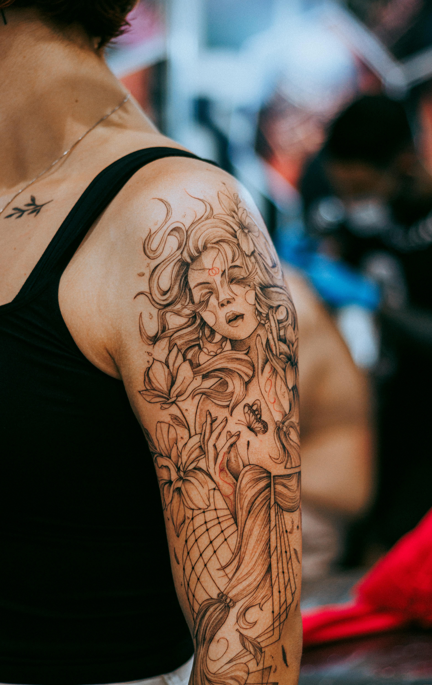

Meet the team
Professional Tattoo Artists
Our talented artists specialise in different styles, from realism to traditional tattooing.

John Black
Specialises in realism and potrait tattoos.
Emma Shade
Blackwork and geometric tattoo artist.